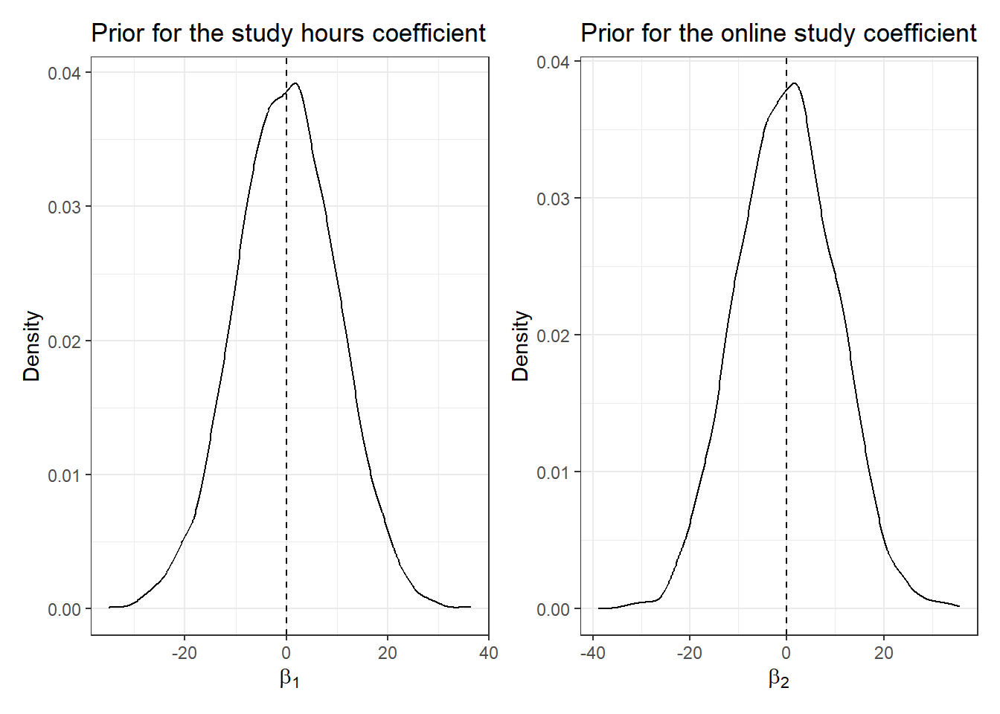
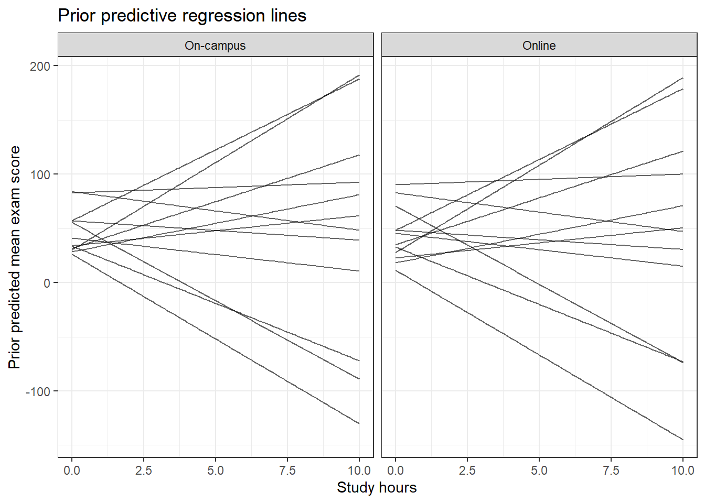
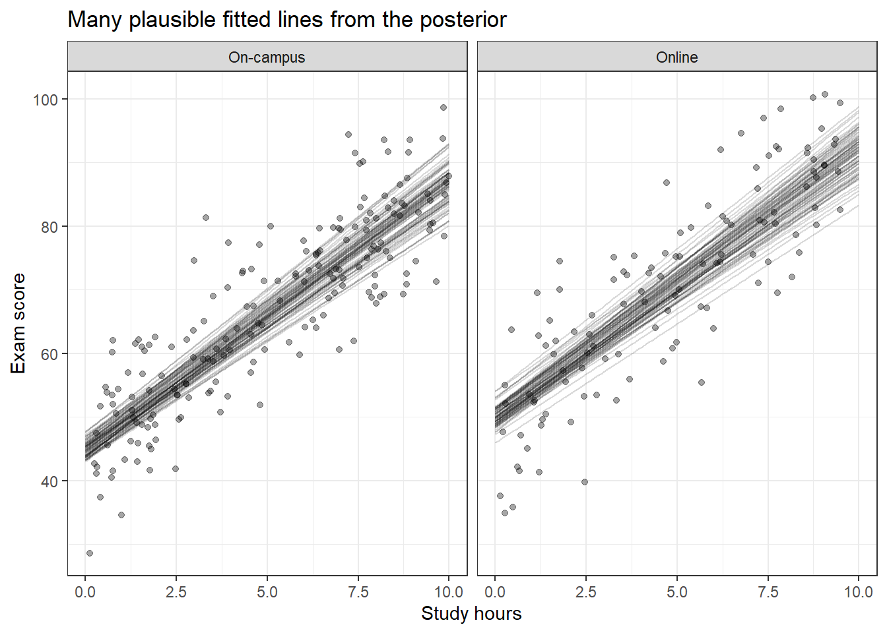
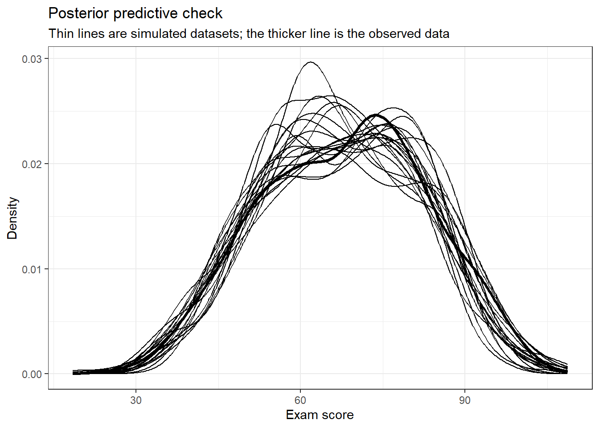
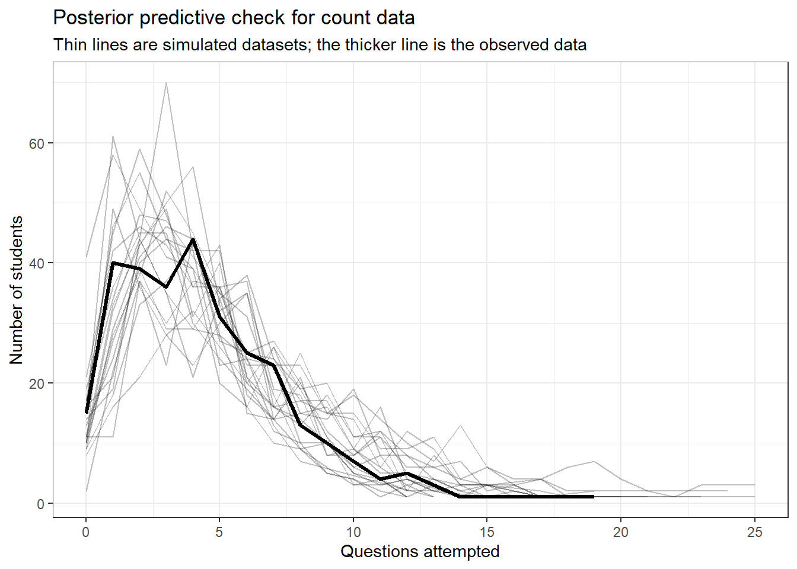
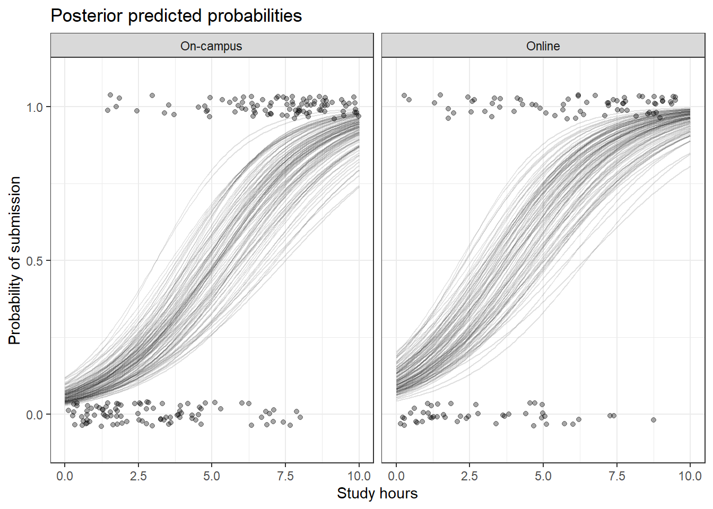

| Frequentist regression | Bayesian regression |
|---|---|
| Coefficients are fixed but unknown | Coefficients are uncertain quantities |
| The model produces estimates such as beta-hat | The model produces posterior distributions |
| Uncertainty is often summarised using standard errors and confidence intervals | Uncertainty is summarised using posterior standard deviations, credible intervals, and posterior probabilities |
| Predictions are often reported as fitted values or point predictions | Predictions can be full posterior predictive distributions |
| Model checking often uses residual plots, influence checks, and information criteria | Model checking often uses prior predictive and posterior predictive checks |
11 Thinking with Bayesian Regression Models
Learning Objectives
By the end of this chapter, you should be able to:
- Explain how Bayesian regression extends the regression models introduced in the previous chapter.
- Identify the likelihood, linear predictor, link function, prior, and posterior in a Bayesian regression model.
- Choose and explain weakly informative priors for regression coefficients.
- Interpret posterior distributions, credible intervals, and posterior probabilities for regression coefficients.
- Explain the difference between a fitted value and a posterior predictive distribution.
- Use prior predictive checks to assess whether a set of priors implies plausible data.
- Use posterior predictive checks to assess whether a fitted model can reproduce important features of the observed data.
- Fit Bayesian linear, Poisson, and logistic regression models in R.
- Interpret Bayesian regression coefficients on the outcome scale, count scale, and odds scale.
- Compare Bayesian regression models using predictive performance and leave-one-out cross-validation.
11.1 Introduction
In the previous chapter, we introduced regression models. We used linear regression for continuous outcomes, Poisson regression for count outcomes, and logistic regression for binary outcomes. In each case, the model had the same broad structure:
The predictors describe the systematic pattern, and the distribution describes the random variation around that pattern.
This chapter keeps that same modelling idea, but changes how we think about the unknown quantities in the model.
In Chapter 8, we introduced the Bayesian idea that uncertainty can be represented using probability. We learned that a prior and a likelihood combine to form a posterior:
\[ \text{posterior} \propto \text{prior} \times \text{likelihood}. \]
In Chapter 9, we saw that posterior distributions are not always available in a simple mathematical form. When this happens, we can use simulation methods, such as grid approximation or Markov chain Monte Carlo, to generate posterior draws. A posterior draw is one simulated plausible value of an unknown quantity after seeing the data.
This chapter brings those ideas together with regression.
A Bayesian regression model is a regression model where the unknown parameters are given prior distributions and then updated using the data. Instead of reporting only one estimated slope, we describe a posterior distribution for the slope. Instead of giving only one prediction, we can describe a distribution of plausible predictions.
The key shift is:
\[ \text{Frequentist regression estimates unknown coefficients.} \]
\[ \text{Bayesian regression describes uncertainty about unknown coefficients.} \]
This does not mean that the regression model from the previous chapter disappears. The likelihood, outcome type, link function, and interpretation of coefficients are still central. The Bayesian addition is that we now place priors on the unknown parameters and use the posterior distribution to represent what we know after seeing the data.
What we will not repeat
This chapter assumes that you have already met the main Bayesian ideas from Chapters 8 and 9: priors, likelihoods, posteriors, credible intervals, posterior probabilities, posterior draws, and MCMC. We will briefly remind ourselves of these ideas when needed, but the focus here is on how they are used in regression models.
11.2 What changes when regression becomes Bayesian?
In a frequentist regression model, the coefficients are treated as fixed but unknown values. We estimate them from the data. For example, in a simple linear regression model, we might report an estimated slope:
\[ \hat{\beta}_1 = 4.2. \]
This is a single fitted value. It is our estimate of the association between the predictor and outcome.
In a Bayesian regression model, the coefficient itself is treated as uncertain. Instead of only estimating one value, we describe a posterior distribution:
\[ p(\beta_1 \mid \text{data}). \]
This posterior distribution tells us which values of \(\beta_1\) are plausible after combining the prior and the data.
So the question changes from:
What is the estimated slope?
into:
What values of the slope are plausible after seeing the data?
The difference is not only philosophical. It changes how we communicate results.
A frequentist statement might be:
The estimated slope is 4.2.
A Bayesian statement might be:
The posterior mean of the slope is 4.2, and the 95% credible interval is from 3.6 to 4.8.
We can also make probability statements about parameters. For example:
\[ P(\beta_1 > 0 \mid \text{data}) = 0.99. \]
This means that, given the model, prior, and data, the posterior probability that the slope is positive is 0.99.
Parameters and probability
In Bayesian inference, probability can be used to describe uncertainty about parameters. This is why it makes sense to say that there is a posterior probability that a coefficient is positive. The probability is not about repeatedly sampling the same dataset. It is about uncertainty after seeing this dataset.
11.3 The Bayesian regression recipe
The regression models in this chapter follow a common recipe. The ingredients should now feel familiar.
| Ingredient | Question to ask |
|---|---|
| Outcome | What are we trying to explain or predict? |
| Predictors | What variables describe the systematic pattern? |
| Likelihood | What distribution matches the outcome type? |
| Linear predictor | How do the predictors combine to describe the modelled quantity? |
| Link function | Do we model the mean directly, or use a transformation such as log or logit? |
| Priors | What coefficient values were plausible before seeing the data? |
| Posterior | What coefficient values are plausible after seeing the data? |
| Posterior prediction | What outcomes does the fitted model predict, including uncertainty? |
| Model checking | Can the model reproduce important features of the observed data? |
The first five ingredients are the same basic modelling ingredients from the previous chapter. The Bayesian additions are the priors, posterior, and posterior predictions.
A useful way to remember the structure is:
\[ \text{Bayesian regression} = \text{regression likelihood} + \text{priors} + \text{posterior simulation}. \]
11.4 A running example: student study data
We will use the same running example as the previous chapter. This allows us to focus on the Bayesian changes rather than learning a new dataset.
The dataset represents a group of students and contains information about their study habits and assessment outcomes.
The predictors are:
study_hours: the number of hours a student studiedstudy_mode: whether the student studied online or on campus
The outcomes are:
exam_score: a continuous outcomequestions_attempted: a count outcomesubmitted: a yes/no outcome
| student_id | study_hours | study_mode | exam_score | questions_attempted | submitted | submitted_label |
|---|---|---|---|---|---|---|
| 1 | 1.17 | On-campus | 56.99 | 3 | 0 | Not submitted |
| 2 | 0.57 | On-campus | 54.64 | 1 | 0 | Not submitted |
| 3 | 2.10 | On-campus | 56.47 | 4 | 0 | Not submitted |
| 4 | 4.55 | On-campus | 62.93 | 4 | 0 | Not submitted |
| 5 | 9.55 | On-campus | 80.46 | 7 | 1 | Submitted |
| 6 | 9.50 | Online | 82.57 | 13 | 1 | Submitted |
| 7 | 1.40 | Online | 61.21 | 1 | 0 | Not submitted |
| 8 | 7.73 | On-campus | 80.94 | 5 | 1 | Submitted |
The same three outcome types from the previous chapter will guide the Bayesian models in this chapter.
| Outcome | Type of outcome | Frequentist model | Bayesian model |
|---|---|---|---|
| exam_score | Continuous measurement | Linear regression | Bayesian linear regression |
| questions_attempted | Count | Poisson regression | Bayesian Poisson regression |
| submitted | Yes/no outcome | Logistic regression | Bayesian logistic regression |
11.5 Bayesian linear regression
We begin with the continuous outcome, exam_score.
In the previous chapter, we used linear regression when the outcome was numerical and approximately continuous. The same likelihood is used here. The difference is that the unknown coefficients now receive priors.
11.5.1 The model from the previous chapter
The frequentist linear regression model was:
\[ Y_i \sim \text{Normal}(\mu_i, \sigma) \]
with:
\[ \mu_i = \beta_0 + \beta_1 \text{study hours}_i + \beta_2 \text{online}_i. \]
Here:
- \(Y_i\) is the exam score for student \(i\);
- \(\mu_i\) is the expected exam score for student \(i\);
- \(\beta_0\) is the intercept;
- \(\beta_1\) is the coefficient for study hours;
- \(\beta_2\) is the coefficient for studying online;
- \(\sigma\) is the residual standard deviation.
In the frequentist version, we estimated the unknown parameters:
\[ \hat{\beta}_0, \hat{\beta}_1, \hat{\beta}_2, \hat{\sigma}. \]
11.5.2 The Bayesian version
The Bayesian version keeps the same likelihood:
\[ Y_i \sim \text{Normal}(\mu_i, \sigma) \]
with the same regression equation:
\[ \mu_i = \beta_0 + \beta_1 \text{study hours}_i + \beta_2 \text{online}_i. \]
Then we add priors:
\[ \beta_0 \sim \text{Normal}(50, 20) \]
\[ \beta_1 \sim \text{Normal}(0, 10) \]
\[ \beta_2 \sim \text{Normal}(0, 10) \]
\[ \sigma \sim \text{Exponential}(1). \]
The posterior distribution is:
\[ p(\beta_0, \beta_1, \beta_2, \sigma \mid \text{data}). \]
This posterior distribution describes what values of the intercept, slopes, and residual spread are plausible after seeing the observed exam scores.
11.5.3 Interpreting the priors
Priors in regression models should be interpreted on the scale of the outcome and the predictors.
The prior:
\[ \beta_0 \sim \text{Normal}(50, 20) \]
says that before seeing the data, we expect the baseline exam score to be somewhere around 50, but with a fairly wide range of plausible values.
The prior:
\[ \beta_1 \sim \text{Normal}(0, 10) \]
says that before seeing the data, we think the effect of one additional study hour is probably near 0, but effects of several marks in either direction are still plausible.
The prior:
\[ \beta_2 \sim \text{Normal}(0, 10) \]
says that before seeing the data, we think the difference between online and on-campus students is probably near 0, but differences of several marks in either direction are still plausible.
Finally:
\[ \sigma \sim \text{Exponential}(1) \]
is a prior for the residual standard deviation. Since \(\sigma\) must be positive, we use a distribution that only gives positive values.
Regression priors have units
A prior for a regression coefficient is not just an abstract mathematical object. It has units. If the outcome is exam score and the predictor is study hours, then the slope has units of exam marks per study hour. A prior for that slope is a prior about plausible changes in exam marks for each additional hour of study.
11.5.4 Visualising priors
Before fitting a Bayesian model, it is useful to look at the priors. This helps us check whether they imply reasonable values.

Both priors are centred at 0. This does not mean that we believe the coefficients are exactly 0. It means that before seeing the data, positive and negative effects are both possible, and very large effects are less plausible than moderate effects.
11.5.5 Fitting the model in R
For Bayesian regression in R, a common package is brms. The syntax is deliberately similar to the model formulas we used with glm() in the previous chapter.
The code below fits the Bayesian linear regression model.
library(brms)
bayes_linear <- brm(
exam_score ~ study_hours + study_mode,
data = student_models,
family = gaussian(),
prior = c(
prior(normal(50, 20), class = Intercept),
prior(normal(0, 10), class = b),
prior(exponential(1), class = sigma)
)
)The formula:
exam_score ~ study_hours + study_modehas the same meaning as before. It says that exam_score is the outcome and that study_hours and study_mode are the predictors.
The new part is the prior argument. This is where we tell R what prior distributions to place on the unknown parameters.
Why are some code chunks not evaluated?
The brm() function uses MCMC to fit Bayesian models. This can take longer than the examples in earlier chapters, especially on slower computers. In this chapter, the model-fitting chunks are shown as code for you to run, but some are not automatically evaluated when the document renders.
11.5.6 Reading the model output
After fitting the model, we can inspect it using:
summary(bayes_linear)The output includes posterior summaries for each unknown parameter. Common columns include:
| Output | Meaning |
|---|---|
| Estimate | The posterior mean or median, depending on the summary |
| Est.Error | The posterior standard deviation |
| l-95% CI and u-95% CI | The lower and upper ends of a 95% credible interval |
| Rhat | A convergence diagnostic; values close to 1 are desired |
| Bulk_ESS and Tail_ESS | Effective sample sizes for the posterior draws |
The diagnostics Rhat, Bulk_ESS, and Tail_ESS connect back to the MCMC ideas from Chapter 9. We do not need to re-learn MCMC here, but we do need to remember that Bayesian software is using simulation to approximate the posterior distribution.
11.5.7 Interpreting posterior coefficients
Suppose the posterior summary for study_hours looked like this:
| Parameter | Estimate | Est_Error | l-95% CI | u-95% CI |
|---|---|---|---|---|
| Intercept | 45.10 | 1.10 | 42.90 | 47.20 |
| study_hours | 4.20 | 0.20 | 3.80 | 4.60 |
| study_modeOnline | 5.10 | 0.90 | 3.30 | 6.90 |
| sigma | 8.00 | 0.30 | 7.40 | 8.60 |
We would interpret the study_hours coefficient as:
After combining the prior and data, each additional hour of study is associated with an expected increase of about 4.2 exam marks, holding study mode fixed.
The 95% credible interval might be interpreted as:
Given the model, priors, and data, there is a 95% posterior probability that the coefficient for study hours lies between 3.8 and 4.6.
This is one of the most important interpretive differences between this chapter and the previous chapter.
Credible intervals
A 95% credible interval is an interval that contains 95% of the posterior distribution. In this setting, it is natural to say that there is a 95% posterior probability that the parameter lies inside the interval, conditional on the model, prior, and data.
11.5.8 Posterior probability statements
Because Bayesian inference gives us posterior draws, we can calculate probabilities about coefficients directly.
For example, to estimate the posterior probability that the study hours coefficient is positive:
posterior_draws <- as_draws_df(bayes_linear)
mean(posterior_draws$b_study_hours > 0)If the result were 0.999, we would say:
Given the model, prior, and data, the posterior probability that the study hours coefficient is positive is about 0.999.
This type of statement is one of the advantages of working directly with a posterior distribution.
11.6 Prior predictive checks
A prior predictive check asks what kind of data the model expects before seeing the observed outcome.
This is different from fitting the model. In a prior predictive check, we simulate from the priors and the likelihood, but we do not condition on the observed data.
The question is:
If these priors were true, what kinds of datasets could the model generate?
This is useful because priors can imply unrealistic data, even if each prior looks reasonable by itself.
11.6.1 A simple prior predictive simulation
For the linear regression model, the prior predictive process is:
- Draw possible values of \(\beta_0\), \(\beta_1\), \(\beta_2\), and \(\sigma\) from the priors.
- Use those values to calculate \(\mu_i\) for each student.
- Simulate exam scores from a Normal distribution centred at \(\mu_i\).
- Check whether the simulated exam scores look plausible.

Each line is one possible regression line implied by the priors. Some lines may be reasonable. Others may imply very high or very low exam scores.
This does not automatically mean the priors are wrong. But it gives us a chance to ask whether they are appropriate for this context.
For example, if the prior predictive distribution regularly produced exam scores below -100 or above 300, we might decide that the priors are too wide for an exam scored roughly between 0 and 100.
11.6.2 Prior predictive checks in brms
In brms, we can sample from the prior predictive distribution using sample_prior = "only".
prior_linear <- brm(
exam_score ~ study_hours + study_mode,
data = student_models,
family = gaussian(),
prior = c(
prior(normal(50, 20), class = Intercept),
prior(normal(0, 10), class = b),
prior(exponential(1), class = sigma)
),
sample_prior = "only"
)
pp_check(prior_linear)The function pp_check() compares observed data with simulated data. When used with a prior-only model, it compares the observed data with data simulated from the prior predictive distribution.
Prior predictive check
A prior predictive check asks whether the model and priors imply plausible data before the observed outcome has been used. It is a way of checking whether the priors are sensible in the context of the problem.
11.7 Posterior predictions and posterior predictive checks
Once we have fitted a Bayesian model, we can generate predictions from the posterior distribution.
There are two related ideas:
- Posterior fitted values
- Posterior predictive values
They sound similar, but they are not exactly the same.
11.7.1 Posterior fitted values
A fitted value is the expected value of the outcome for a particular set of predictors.
In the linear regression model:
\[ \mu_i = \beta_0 + \beta_1 \text{study hours}_i + \beta_2 \text{online}_i. \]
Because the coefficients have posterior distributions, \(\mu_i\) also has a posterior distribution. Each posterior draw of the coefficients gives a different plausible fitted value.
In brms, posterior fitted values can be obtained using:
fitted(bayes_linear)11.7.2 Posterior predictive values
A posterior predictive value is a simulated possible outcome. It includes uncertainty about the regression line and the random variation around the line.
For a linear regression model, a posterior predictive draw simulates:
\[ Y_i^{rep} \sim \text{Normal}(\mu_i, \sigma). \]
Here, \(Y_i^{rep}\) means a replicated or future value of the outcome.
In brms, posterior predictive draws can be obtained using:
posterior_predict(bayes_linear)The difference is:
| Quantity | What it describes | Includes random outcome variation? | Example function |
|---|---|---|---|
| Posterior fitted value | Uncertainty about the expected outcome | No | fitted() |
| Posterior predictive value | Uncertainty about a possible observed outcome | Yes | posterior_predict() |
11.7.3 Visualising posterior predictions
The figure below shows the idea using simulated posterior draws. Each line is a plausible fitted relationship between study hours and exam score. The shaded-looking spread of lines represents uncertainty about the regression relationship.

A frequentist model often encourages us to look at a single fitted line. A Bayesian model encourages us to think in terms of many plausible lines, weighted by their posterior plausibility.
11.7.4 Posterior predictive checks
A posterior predictive check asks whether data simulated from the fitted model look similar to the data we actually observed.
The question is:
If this model were a reasonable data-generating story, would it be able to generate data like ours?
In brms, we can use:
pp_check(bayes_linear)This function simulates replicated datasets from the posterior predictive distribution and compares them with the observed data.
The following figure illustrates the idea using simulated predictive datasets.

If the simulated datasets look very different from the observed data, the model may be missing something important.
Posterior predictive checks do not prove a model is true
A posterior predictive check can show that a model struggles to reproduce the observed data. But a model passing a posterior predictive check does not prove that the model is true. It only suggests that the model can reproduce the particular feature being checked.
11.8 Bayesian Poisson regression
We now move to the count outcome, questions_attempted.
In the previous chapter, we used Poisson regression when the outcome was a count. We keep the same likelihood and log link, but add priors for the unknown coefficients.
11.8.1 The model
The Bayesian Poisson regression model is:
\[ Y_i \sim \text{Poisson}(\lambda_i) \]
with:
\[ \log(\lambda_i) = \beta_0 + \beta_1 \text{study hours}_i + \beta_2 \text{online}_i. \]
Here:
- \(Y_i\) is the number of questions attempted by student \(i\);
- \(\lambda_i\) is the expected number of questions attempted;
- the log link ensures that \(\lambda_i\) is positive.
We might use priors such as:
\[ \beta_0 \sim \text{Normal}(0, 2) \]
\[ \beta_1 \sim \text{Normal}(0, 1) \]
\[ \beta_2 \sim \text{Normal}(0, 1). \]
These priors are on the log expected count scale. This matters because a coefficient of 1 on the log scale corresponds to multiplying the expected count by:
\[ e^1 \approx 2.72. \]
So a Normal(0, 1) prior for a Poisson regression coefficient is already fairly wide on the count scale.
11.8.2 Fitting the model in R
bayes_poisson <- brm(
questions_attempted ~ study_hours + study_mode,
data = student_models,
family = poisson(),
prior = c(
prior(normal(0, 2), class = Intercept),
prior(normal(0, 1), class = b)
)
)The model formula has the same structure as before. The important change is:
family = poisson()This tells R to use a Poisson likelihood with a log link.
11.8.3 Interpreting rate ratios
As in the previous chapter, Poisson regression coefficients are on the log expected count scale. To interpret them on the original count scale, we exponentiate them.
\[ \exp(\beta_j) \]
This gives a rate ratio. In a Bayesian model, the rate ratio has a posterior distribution.
For example, suppose the posterior median for the study_hours coefficient is:
\[ \beta_1 = 0.18. \]
Then:
\[ \exp(0.18) \approx 1.20. \]
We would say:
After combining the prior and data, each additional hour of study is associated with an expected question count about 1.20 times as large, holding study mode fixed.
Equivalently, each additional hour of study is associated with about a 20% increase in the expected number of questions attempted.
In R, we can exponentiate posterior draws:
posterior_draws <- as_draws_df(bayes_poisson)
posterior_draws |>
mutate(rate_ratio_study_hours = exp(b_study_hours)) |>
summarise(
posterior_median = median(rate_ratio_study_hours),
lower = quantile(rate_ratio_study_hours, 0.025),
upper = quantile(rate_ratio_study_hours, 0.975),
prob_greater_than_1 = mean(rate_ratio_study_hours > 1)
)This produces a posterior summary of the rate ratio, not just the log-scale coefficient.
11.8.4 Posterior predictive checks for count data
For count data, posterior predictive checks can help us see whether the model captures features such as:
- the number of zeroes;
- the spread of the counts;
- the upper tail of the distribution;
- whether the variance is larger than expected under a Poisson model.
pp_check(bayes_poisson)The figure below illustrates a possible posterior predictive check for a count outcome.

If the observed counts are much more variable than the simulated counts, this may suggest overdispersion. Overdispersion means the observed variation is larger than the Poisson model expects. A common extension is a negative binomial regression model, but we will not develop that model here.
11.9 Bayesian logistic regression
We now move to the binary outcome, submitted.
In the previous chapter, we used logistic regression when the outcome had two possible values. The Bayesian version keeps the Bernoulli likelihood and logit link, but adds priors for the unknown coefficients.
11.9.1 The model
The Bayesian logistic regression model is:
\[ Y_i \sim \text{Bernoulli}(p_i) \]
with:
\[ \log \left( \frac{p_i}{1-p_i} \right) = \beta_0 + \beta_1 \text{study hours}_i + \beta_2 \text{online}_i. \]
Here:
- \(Y_i\) records whether student \(i\) submitted;
- \(p_i\) is the probability that student \(i\) submitted;
- the logit link ensures that predicted probabilities stay between 0 and 1.
We might use priors such as:
\[ \beta_0 \sim \text{Normal}(0, 2) \]
\[ \beta_1 \sim \text{Normal}(0, 1) \]
\[ \beta_2 \sim \text{Normal}(0, 1). \]
These priors are on the log odds scale.
11.9.2 Fitting the model in R
bayes_logistic <- brm(
submitted ~ study_hours + study_mode,
data = student_models,
family = bernoulli(),
prior = c(
prior(normal(0, 2), class = Intercept),
prior(normal(0, 1), class = b)
)
)The model formula is familiar. The important change is:
family = bernoulli()This tells R to use a Bernoulli likelihood for a binary outcome.
11.9.3 Interpreting odds ratios
Logistic regression coefficients are on the log odds scale. To interpret them as odds ratios, we exponentiate them:
\[ \exp(\beta_j). \]
In a Bayesian logistic regression model, the odds ratio has a posterior distribution.
Suppose the posterior median for the study_hours coefficient is:
\[ \beta_1 = 0.55. \]
Then:
\[ \exp(0.55) \approx 1.73. \]
We would say:
After combining the prior and data, each additional hour of study is associated with odds of submission about 1.73 times as large, holding study mode fixed.
This is an odds interpretation, not a direct probability interpretation.
Odds ratios still are not probabilities
If an odds ratio is 1.73, this does not mean the probability increases by 73 percentage points. It means the odds are multiplied by 1.73. To talk about probabilities, we should transform predictions back to the probability scale.
11.9.4 Posterior predicted probabilities
A useful feature of Bayesian logistic regression is that we can summarise uncertainty on the probability scale.
For example, we might ask:
What is the predicted probability of submission for an on-campus student who studied for 4 hours?
or:
How does the probability of submission change as study hours increase?
In brms, we can use:
conditional_effects(bayes_logistic)or obtain fitted probabilities using:
fitted(bayes_logistic, scale = "response")The figure below illustrates posterior uncertainty in predicted probabilities.

The lines show plausible probability curves from the posterior. They are not all identical because there is uncertainty about the coefficients.
11.9.5 Posterior probability that an odds ratio is greater than 1
With posterior draws, we can calculate direct probability statements.
For example:
posterior_draws <- as_draws_df(bayes_logistic)
mean(exp(posterior_draws$b_study_hours) > 1)This calculates the posterior probability that the odds ratio for study_hours is greater than 1.
If this probability is 0.99, we would say:
Given the model, prior, and data, there is a 99% posterior probability that the odds ratio for study hours is greater than 1.
11.10 Comparing Bayesian regression models
In the previous chapter, we compared models using AIC, BIC, and test-set prediction error. In Bayesian modelling, we often focus on predictive comparison.
The question is:
Which model is expected to predict new data better?
One common tool is leave-one-out cross-validation, often abbreviated as LOO.
11.10.1 Leave-one-out cross-validation
Leave-one-out cross-validation estimates how well a model would predict observations that were not used to fit it.
The basic idea is:
- Leave out one observation.
- Fit the model to the remaining observations.
- Predict the left-out observation.
- Repeat this for each observation.
Doing this literally can be slow for Bayesian models. The loo package uses an efficient approximation, which brms can call directly.
loo_linear_1 <- loo(bayes_model_1)
loo_linear_2 <- loo(bayes_model_2)
loo_compare(loo_linear_1, loo_linear_2)The details of LOO are more advanced than we need here. For now, the important idea is that LOO compares models based on expected predictive performance.
Model comparison is not automatic model choice
A model with better predictive performance is not automatically the best model for every purpose. We should also consider whether the model answers the research question, whether the priors are sensible, whether the model passes important predictive checks, and whether the model is interpretable.
11.11 A full example
In this section, we revisit the Student Performance Dataset from the previous chapter. The dataset contains 10,000 student records and is designed to examine factors associated with academic performance.
Each row represents one student. The variables are:
Hours Studied: total number of hours spent studyingPrevious Scores: scores obtained in previous testsExtracurricular Activities: whether the student participates in extracurricular activitiesSleep Hours: average hours of sleep per daySample Question Papers Practiced: number of sample question papers practisedPerformance Index: overall academic performance score, ranging from 10 to 100
The outcome variable is Performance Index. Since this is a numerical outcome, we will use Bayesian linear regression.
Our aim is to build, compare, and evaluate three Bayesian multiple regression models. Each model will use three predictors.
11.11.1 Loading and preparing the data
First, we load the dataset.
student_performance <- read_csv("data/Student_Performance.csv")The variable names contain spaces, which can make modelling code harder to read. We rename the variables using shorter names.
student_performance <- student_performance |>
rename(
hours_studied = `Hours Studied`,
previous_scores = `Previous Scores`,
extracurricular = `Extracurricular Activities`,
sleep_hours = `Sleep Hours`,
practice_papers = `Sample Question Papers Practiced`,
performance_index = `Performance Index`
) |>
mutate(
extracurricular = factor(extracurricular)
)We can inspect the first few rows:
student_performance |>
slice_head(n = 10)11.11.2 Choosing priors
The outcome, performance_index, ranges from about 10 to 100. A reasonable prior for the intercept might place most of its mass near the middle of this range:
\[ \beta_0 \sim \text{Normal}(50, 20). \]
For the slopes, we might start with:
\[ \beta_j \sim \text{Normal}(0, 10). \]
This says that before seeing the data, we expect each coefficient to be near 0, but effects of several performance points in either direction are plausible.
For the residual standard deviation:
\[ \sigma \sim \text{Exponential}(1). \]
These priors are weakly informative. They provide some structure, but still allow the data to play a large role.
student_priors <- c(
prior(normal(50, 20), class = Intercept),
prior(normal(0, 10), class = b),
prior(exponential(1), class = sigma)
)11.11.3 Splitting into training and testing data
As in the previous chapter, we can split the data into training and testing sets.
library(rsample)
set.seed(2420)
split <- initial_split(student_performance)
train_data <- training(split)
test_data <- testing(split)The training set is used to fit the models. The testing set is used to evaluate prediction on data that were not used during fitting.
11.11.4 Fitting three Bayesian models
Model 1 focuses on academic effort and preparation:
bayes_model_1 <- brm(
performance_index ~ hours_studied + previous_scores + practice_papers,
data = train_data,
family = gaussian(),
prior = student_priors
)Model 2 focuses on routine and activity:
bayes_model_2 <- brm(
performance_index ~ hours_studied + sleep_hours + extracurricular,
data = train_data,
family = gaussian(),
prior = student_priors
)Model 3 combines previous achievement with lifestyle variables:
bayes_model_3 <- brm(
performance_index ~ previous_scores + sleep_hours + extracurricular,
data = train_data,
family = gaussian(),
prior = student_priors
)Each model is a Bayesian multiple regression model because each includes multiple predictors and priors for the unknown coefficients.
11.11.5 Checking convergence
Because brm() uses MCMC, we should check whether the chains behaved sensibly. This connects back to Chapter 9.
summary(bayes_model_1)
plot(bayes_model_1)The main things to check are:
Rhatvalues should be close to 1;- effective sample sizes should be large enough;
- trace plots should look well mixed, without obvious trends or chains getting stuck.
If the diagnostics look poor, we should not interpret the posterior summaries until the computational problem is addressed.
11.11.6 Interpreting posterior coefficients
We can inspect the posterior summaries using:
summary(bayes_model_1)
summary(bayes_model_2)
summary(bayes_model_3)For a coefficient in a Bayesian linear regression model, the interpretation is:
Holding the other predictors fixed, the posterior distribution for this coefficient describes plausible changes in the expected performance index for a one-unit increase in the predictor.
For example, if the posterior mean for hours_studied is 2.8, we would say:
After combining the prior and data, each additional hour studied is associated with an expected increase of about 2.8 points in performance index, holding the other predictors in the model fixed.
If the 95% credible interval is from 2.7 to 2.9, we would say:
Given the model, priors, and data, there is a 95% posterior probability that the coefficient lies between 2.7 and 2.9.
11.11.7 Posterior predictive checks
We should check whether each model can reproduce important features of the observed outcome.
pp_check(bayes_model_1)
pp_check(bayes_model_2)
pp_check(bayes_model_3)If a model’s simulated datasets look very different from the observed data, then the model may not be a good description of the data-generating process.
11.11.8 Test-set prediction
We can generate posterior predictions for the testing data.
pred_1 <- posterior_predict(
bayes_model_1,
newdata = test_data
)
pred_2 <- posterior_predict(
bayes_model_2,
newdata = test_data
)
pred_3 <- posterior_predict(
bayes_model_3,
newdata = test_data
)Each object contains many posterior predictive draws. To get one summary prediction for each student, we can take the average across posterior draws.
test_predictions <- test_data |>
mutate(
pred_model_1 = colMeans(pred_1),
pred_model_2 = colMeans(pred_2),
pred_model_3 = colMeans(pred_3)
)Then we can calculate mean absolute error and root mean squared error.
model_performance <- tibble(
model = c("Model 1", "Model 2", "Model 3"),
MAE = c(
mean(abs(test_predictions$performance_index - test_predictions$pred_model_1)),
mean(abs(test_predictions$performance_index - test_predictions$pred_model_2)),
mean(abs(test_predictions$performance_index - test_predictions$pred_model_3))
),
RMSE = c(
sqrt(mean((test_predictions$performance_index - test_predictions$pred_model_1)^2)),
sqrt(mean((test_predictions$performance_index - test_predictions$pred_model_2)^2)),
sqrt(mean((test_predictions$performance_index - test_predictions$pred_model_3)^2))
)
)
model_performance |>
gt() |>
fmt_number(
columns = c(MAE, RMSE),
decimals = 2
)This compares the models on data that were not used to fit them.
11.11.9 Comparing models with LOO
We can also compare the models using leave-one-out cross-validation.
loo_1 <- loo(bayes_model_1)
loo_2 <- loo(bayes_model_2)
loo_3 <- loo(bayes_model_3)
loo_compare(loo_1, loo_2, loo_3)LOO estimates expected predictive performance. A model with better LOO performance is expected to predict new observations better, but this should still be considered alongside interpretability, posterior predictive checks, and the research question.
11.11.10 Choosing a model
At this point, we have several pieces of evidence:
- posterior coefficient summaries;
- convergence diagnostics;
- posterior predictive checks;
- test-set MAE and RMSE;
- LOO comparison;
- the research context.
A good Bayesian regression analysis does not choose a model from one number alone.
For example, if Model 1 has the best predictive performance and reasonable posterior predictive checks, we might prefer it because it includes study hours, previous scores, and practice papers. These predictors are also directly related to academic preparation.
However, if another model performs similarly and is easier to explain, it may also be a reasonable choice. Model choice should be tied to the purpose of the analysis.
Bayesian modelling is a workflow
A Bayesian regression analysis is not just:
brm(y ~ x, data = data)A full workflow includes:
- understanding the data;
- choosing a likelihood that matches the outcome;
- choosing priors that make sense in context;
- checking the implications of the priors;
- fitting the model;
- checking convergence;
- interpreting the posterior;
- generating posterior predictions;
- checking whether the model can reproduce the observed data;
- comparing models using predictive performance;
- connecting the results back to the original question.
11.12 Summary
This chapter combined the Bayesian ideas from Chapters 8 and 9 with the regression models from Chapter 10.
In Chapter 10, we fitted regression models by estimating fixed but unknown coefficients. In this chapter, we treated those coefficients as uncertain quantities and described them using posterior distributions.
The same three model types remain central:
| Outcome type | Frequentist model | Bayesian model | Likelihood | Link |
|---|---|---|---|---|
| Continuous | Linear regression | Bayesian linear regression | Normal | Identity |
| Count | Poisson regression | Bayesian Poisson regression | Poisson | Log |
| Binary | Logistic regression | Bayesian logistic regression | Bernoulli | Logit |
The Bayesian linear regression model is used when the outcome is continuous:
\[ Y_i \sim \text{Normal}(\mu_i, \sigma) \]
with:
\[ \mu_i = \beta_0 + \beta_1 x_{1i} + \cdots + \beta_p x_{pi}. \]
The Bayesian Poisson regression model is used when the outcome is a count:
\[ Y_i \sim \text{Poisson}(\lambda_i) \]
with:
\[ \log(\lambda_i) = \beta_0 + \beta_1 x_{1i} + \cdots + \beta_p x_{pi}. \]
The Bayesian logistic regression model is used when the outcome is binary:
\[ Y_i \sim \text{Bernoulli}(p_i) \]
with:
\[ \log \left( \frac{p_i}{1-p_i} \right) = \beta_0 + \beta_1 x_{1i} + \cdots + \beta_p x_{pi}. \]
The Bayesian addition is that we place priors on the unknown parameters and use the posterior distribution to describe uncertainty after seeing the data.
| Chapter 10 | Chapter 11 |
|---|---|
| Estimate coefficients | Describe posterior distributions for coefficients |
| Use confidence intervals | Use credible intervals and posterior probabilities |
| Use fitted values and predictions | Use posterior fitted values and posterior predictive distributions |
| Check residuals and assumptions | Use prior predictive and posterior predictive checks |
| Compare models with AIC, BIC, and test error | Compare models using predictive performance and LOO |
The main idea is:
Bayesian regression uses the same regression structure as frequentist regression, but represents uncertainty through posterior distributions.
11.13 Exercises
Question 1
For each outcome below, identify a suitable Bayesian regression model.
- A student’s final exam score out of 100.
- The number of tutorial questions a student attempts.
- Whether a student submits an assignment on time.
Click for Solutions
A final exam score is numerical and approximately continuous, so a Bayesian linear regression model is appropriate.
The number of tutorial questions attempted is a count, so a Bayesian Poisson regression model is a possible starting point.
Whether a student submits an assignment on time is a yes/no outcome, so a Bayesian logistic regression model is appropriate.
Question 2
A Bayesian linear regression model is written as:
\[ Y_i \sim \text{Normal}(\mu_i, \sigma) \]
with:
\[ \mu_i = \beta_0 + \beta_1 x_i. \]
Add reasonable priors for \(\beta_0\), \(\beta_1\), and \(\sigma\).
Click for Solutions
One possible set of priors is:
\[ \beta_0 \sim \text{Normal}(50, 20) \]
\[ \beta_1 \sim \text{Normal}(0, 10) \]
\[ \sigma \sim \text{Exponential}(1). \]
The exact priors should depend on the context. The intercept prior should be chosen on the scale of the outcome, and the slope prior should be chosen on the scale of the change in the outcome for a one-unit change in the predictor.
Question 3
Explain why this prior should be interpreted in context:
\[ \beta_1 \sim \text{Normal}(0, 10). \]
Click for Solutions
A regression coefficient has units. If the outcome is exam score and the predictor is study hours, then \(\beta_1\) is measured in exam marks per study hour.
So the prior \(\beta_1 \sim \text{Normal}(0, 10)\) says that before seeing the data, changes near 0 marks per hour are most plausible, but changes of several marks per hour in either direction are also possible.
The same prior could be too wide, too narrow, or reasonable depending on the outcome and predictor scales.
Question 4
Complete the code below to fit a Bayesian linear regression model where exam_score is predicted by study_hours and study_mode.
bayes_linear <- brm(
______ ~ ______ + ______,
data = student_models,
family = ______,
prior = c(
prior(normal(50, 20), class = Intercept),
prior(normal(0, 10), class = b),
prior(exponential(1), class = sigma)
)
)
Click for Solutions
bayes_linear <- brm(
exam_score ~ study_hours + study_mode,
data = student_models,
family = gaussian(),
prior = c(
prior(normal(50, 20), class = Intercept),
prior(normal(0, 10), class = b),
prior(exponential(1), class = sigma)
)
)The outcome is continuous, so we use family = gaussian().
Question 5
A Bayesian linear regression model gives a posterior mean of 4.3 for the study_hours coefficient, with a 95% credible interval from 3.8 to 4.8.
Interpret this result in words.
Click for Solutions
After combining the prior and data, each additional hour of study is associated with an expected increase of about 4.3 exam marks, holding the other predictors fixed.
The 95% credible interval means that, given the model, prior, and data, there is a 95% posterior probability that the coefficient lies between 3.8 and 4.8.
Question 6
What is a prior predictive check? How is it different from a posterior predictive check?
Click for Solutions
A prior predictive check simulates data from the model before using the observed outcome. It asks whether the priors and likelihood imply plausible data.
A posterior predictive check simulates data after fitting the model. It asks whether the fitted model can reproduce important features of the observed data.
The prior predictive check happens before conditioning on the data. The posterior predictive check happens after conditioning on the data.
Question 7
Complete the code below to fit a Bayesian Poisson regression model where questions_attempted is predicted by study_hours and study_mode.
bayes_poisson <- brm(
______ ~ ______ + ______,
data = student_models,
family = ______,
prior = c(
prior(normal(0, 2), class = Intercept),
prior(normal(0, 1), class = b)
)
)
Click for Solutions
bayes_poisson <- brm(
questions_attempted ~ study_hours + study_mode,
data = student_models,
family = poisson(),
prior = c(
prior(normal(0, 2), class = Intercept),
prior(normal(0, 1), class = b)
)
)The outcome is a count, so we use family = poisson().
Question 8
A Bayesian Poisson regression model gives a posterior median of 0.20 for the study_hours coefficient.
Calculate the corresponding rate ratio and interpret it.
Click for Solutions
The rate ratio is:
\[ \exp(0.20) \approx 1.22. \]
This means that each additional hour of study is associated with an expected count about 1.22 times as large, holding the other predictors fixed.
Equivalently, each additional hour of study is associated with about a 22% increase in the expected count.
Question 9
Complete the code below to fit a Bayesian logistic regression model where submitted is predicted by study_hours and study_mode.
bayes_logistic <- brm(
______ ~ ______ + ______,
data = student_models,
family = ______,
prior = c(
prior(normal(0, 2), class = Intercept),
prior(normal(0, 1), class = b)
)
)
Click for Solutions
bayes_logistic <- brm(
submitted ~ study_hours + study_mode,
data = student_models,
family = bernoulli(),
prior = c(
prior(normal(0, 2), class = Intercept),
prior(normal(0, 1), class = b)
)
)The outcome is binary, so we use family = bernoulli().
Question 10
A Bayesian logistic regression model gives a posterior median of 0.50 for the study_hours coefficient.
Calculate the corresponding odds ratio and interpret it.
Click for Solutions
The odds ratio is:
\[ \exp(0.50) \approx 1.65. \]
This means that each additional hour of study is associated with odds of the outcome that are about 1.65 times as large, holding the other predictors fixed.
This is an odds interpretation, not a direct probability interpretation.
Question 11
The following code is used after fitting a Bayesian logistic regression model:
posterior_draws <- as_draws_df(bayes_logistic)
mean(exp(posterior_draws$b_study_hours) > 1)What does this calculate?
Click for Solutions
This calculates the posterior probability that the odds ratio for study_hours is greater than 1.
Since an odds ratio greater than 1 means higher odds, this is the posterior probability that study hours is associated with higher odds of the outcome, given the model, prior, and data.
Question 12
Explain why a Bayesian model should not be chosen using only one number, such as LOO or test-set RMSE.
Click for Solutions
Predictive performance is important, but it is not the only consideration.
A model should also have sensible priors, reasonable convergence diagnostics, useful posterior predictive checks, interpretable coefficients, and a clear connection to the research question.
A model with slightly better predictive performance may not be the best choice if it is difficult to interpret or does not answer the question being asked.